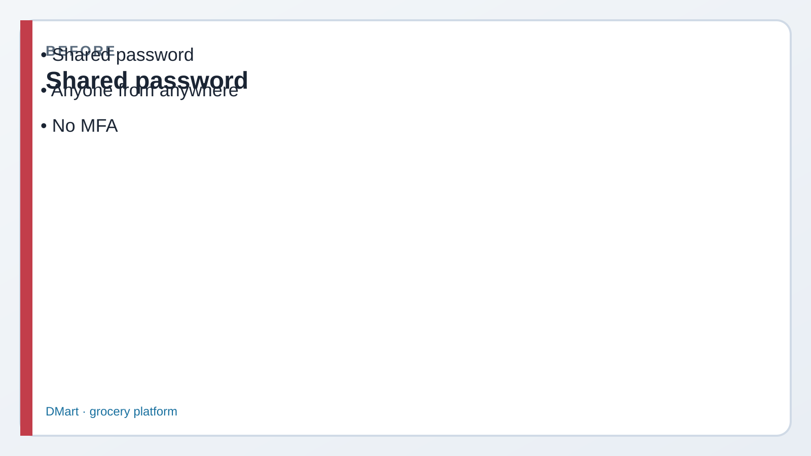
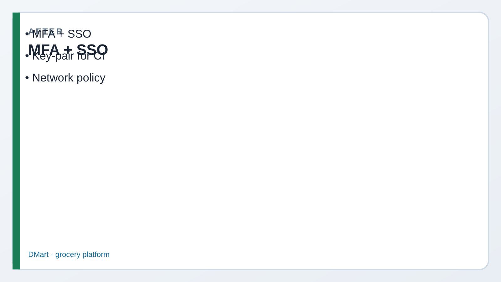

1 SHOW network policies (safe)
What this does: Lists any policies already on the account. Read-only — cannot lock you out.
SQL · show policies
USE ROLE ACCOUNTADMIN;
SHOW NETWORK POLICIES;✓ Result set (maybe empty on a fresh trial)
Lab 07 · Domain 2 · You are Priya
Read every Teach first section before you copy SQL. Roles (Lab 06) answer what you can do. This lab answers how you log in and which networks are allowed. Trial accounts may not configure every option — see-cards still count for the exam.
Picture first. Look at BEFORE/AFTER → read the comic → then run tiny SQL. If a paragraph feels heavy, skip to the next comic strip — Dev explains it out loud for you.


Episode 07 · Start here
Someone pasted the service account password into Slack. If that leaks, RBAC won’t save us — the thief wears Riley’s badge.
Authentication is the front door. MFA/SSO for people. Key-pair for robots. Network policy decides which streets can even ring the doorbell.
Auth = who · Network policy = from where · RBAC = what they can touch after entry.
Second factor (app/Duo) so a stolen password alone fails. Enable in Snowsight user profile.
Log in at Okta / Azure AD; Snowflake trusts the IdP via a SAML security integration. MFA often lives at the IdP.
Public key on the user; private key in the vault/CI. No shared password in Slack.
ALTER USER svc SET RSA_PUBLIC_KEY=…Partner apps / custom clients get tokens via an OAuth security integration. BI tools often use this.
Allowed / blocked CIDR lists. Attach to account or a single user. Wrong allow-list = lockout.
203.0.113.10/32Snowsight scanner for security posture (MFA gaps, risky settings). Awareness for Core — not a magic fix.
Before Step 1
I’ll set ALLOWED_IP_LIST to my home IP and attach it to the whole account. Super secure!
Until your ISP rotates the IP and nobody can open Snowsight. On trial: create policies to learn syntax — don’t attach a tight one to the account.
What this does: Lists any policies already on the account. Read-only — cannot lock you out.
USE ROLE ACCOUNTADMIN;
SHOW NETWORK POLICIES;What this does: Practices CREATE NETWORK POLICY / DESCRIBE syntax with 0.0.0.0/0 (all IPv4). Do not treat this as production hardening. Leave account attach commented.
CREATE NETWORK POLICY IF NOT EXISTS NP_ALPINE_LAB_ALLOW_ALL
ALLOWED_IP_LIST = ('0.0.0.0/0')
COMMENT = 'Lab 07 teaching — allows all IPv4';
DESCRIBE NETWORK POLICY NP_ALPINE_LAB_ALLOW_ALL;
SHOW NETWORK POLICIES LIKE 'NP_ALPINE%';sql/07_auth_network.sql.
Prefer attaching a tight policy to one service user first — not the whole account.
Before Step 3
My company says “use SSO.” Is that MFA? Or something else?
Different layers. SSO = where you prove identity (company IdP). MFA = second factor. Often you get both: SSO login that also demands the phone code.
What this does: Gives you the exam story for each method. Full commented DDL lives in sql/07_auth_network.sql.
-- MFA: enable authenticator in Snowsight user profile
-- SSO: CREATE SECURITY INTEGRATION … TYPE = SAML2 (IdP admin helps)
-- Key-pair: generate RSA keys → ALTER USER … SET RSA_PUBLIC_KEY='…'
-- OAuth: CREATE SECURITY INTEGRATION … TYPE = OAUTH for apps
-- Trust Center: Snowsight → Security → review findingsWhat this does: Confirms who you are in this session — useful when debugging “wrong user / wrong region” auth tickets.
SELECT CURRENT_USER(), CURRENT_ROLE(),
CURRENT_ACCOUNT(), CURRENT_REGION();Basics named the doors. Cover each answer before you open it.
Say: No. SSO federates identity to an IdP (one company login). MFA adds a second factor. They combine often but answer different exam questions.
Say: Automation shouldn’t share human passwords. Public key on the Snowflake user; private key in a vault. Rotatable, no Slack paste, fits SnowSQL/connectors.
Say: Client IP must match ALLOWED_IP_LIST and not BLOCKED_IP_LIST. Attach at account or user. Misconfigured allow-list locks legitimate users out — test on one user first.
Say: Account security posture findings (e.g. users without MFA, risky configs). Awareness/monitoring — it does not replace designing RBAC, SSO, or network policies.
Say: OAuth when a partner app or custom client needs delegated tokens via a security integration. Key-pair when your own service connects directly as a Snowflake user (ETL, scripts).
SECURE.CUSTOMERS_PII.